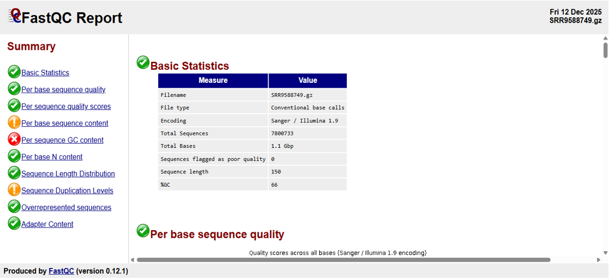
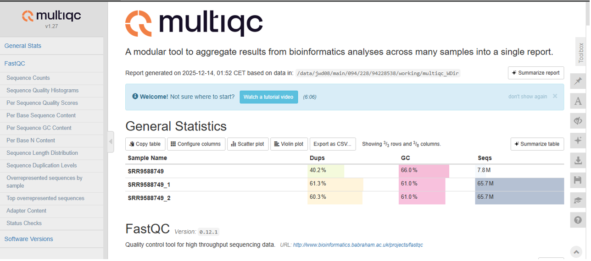

Un pipeline Bioinformatique
Un pipeline bioinformatique est une suite structurée d’étapes ou d’outils utilisés pour traiter, analyser et interpréter des données biologiques, souvent de manière automatisée. Dans le cas des données de séquençage, un pipeline permet de passer d’un fichier brut (comme un fichier FASTQ) jusqu’à l’identification et l’annotation de variants génétiques, à travers des étapes comme le contrôle qualité, le nettoyage, l’alignement, et l’appel de variants.
Objectif du Projet
L’objectif de ce projet est de concevoir et d’exécuter un pipeline bioinformatique complet et rigoureux pour l’analyse de données de séquençage à haut débit. À partir de l’échantillon public SRP211816, il s’agit d’identifier, annoter et interpréter les variants somatiques (SNPs et indels) détectés dans les données RNA-seq, susceptibles d’être associés au développement du cancer du poumon. Parallèlement, le pipeline vise à détecter les gènes différentiellement exprimés entre les tissus tumoraux et les tissus pulmonaires sains adjacents, afin de mettre en évidence des biomarqueurs potentiels et des mécanismes moléculaires impliqués dans la tumorigenèse pulmonaire.
Description du Pipeline Bioinformatique Réalisé sur Galaxy
Pour illustrer concrètement l’analyse transcriptomique dans le contexte du cancer du poumon, notre travail s’est concentré sur l’échantillon public SRP211816, issu du projet de recherche GSE133206. Cette étude vise à caractériser les altérations transcriptionnelles entre des tissus pulmonaires tumoraux et des tissus sains adjacents.
Les données de l’échantillon GSM3902321 ont été générées par séquençage à haut débit (RNA-Seq) sur plateforme Illumina HiSeq 4000.
Notre pipeline bioinformatique, implémenté sur la plateforme Galaxy Europe, a été conçu pour traiter ces données brutes et répondre aux objectifs suivants :
- Identifier les gènes différentiellement exprimés entre les tissus tumoraux et normaux.
- Explorer les voies oncogéniques activées (ex : EGFR, KRAS).
- Rechercher les variants somatiques (SNPs, indels) dans les données RNA-Seq.
- Réaliser une analyse fonctionnelle des processus biologiques perturbés.
1. FastQC : Contrôle qualité individuel
FastQC analyse chaque fichier FASTQ séparément et produit un rapport HTML avec plusieurs graphiques. Son rôle est de vérifier que tes lectures brutes sont de bonne qualité avant le trimming et l’alignement.

Figure 02 : Rapport FastQC.
2. MultiQC : Rapport global agrégé
Le rapport MultiQC est un rapport global qui regroupe tous les échantillons présents dans la collection. MultiQC prend tous les rapports FastQC et les regroupe dans un seul rapport interactif.

Figure 03 : General Statistics MultiQC.
3. Nettoyage (Trimming)
Les rapports FastQC et MultiQC montrent une excellente qualité de séquençage (Phred > 35, 0 % de N). Un trimming test a été réalisé, mais n’apporte pas d’amélioration significative. L’analyse principale a donc été menée sur les reads bruts, afin de préserver au maximum l’information.
4. Alignement des Reads (STAR)
Outil : `STAR` (Spliced Transcripts Alignment to a Reference).
C'est un un algorithme d’alignement spécialement conçu pour les données RNA‑seq qui prend les reads FASTQ (normaux et tumoraux), de petits fragments d’environ 150 pb, et les aligne sur le génome humain GRCh38 afin de les placer au bon endroit, d’identifier pour chaque read le gène d’origine, de détecter les jonctions d’épissage, d’améliorer la précision via un 2‑pass mapping et de préparer les données pour les analyses downstream.

5. Quantification (featureCounts)
featureCounts est l’outil qui transforme les données alignées en données quantitatives exploitables en parcourant les fichiers BAM produits par STAR, lesquels contiennent les reads alignés sur le génome, afin de déterminer pour chaque read sur quel gène, exon et brin il tombe, s’il est unique ou multi‑mappé, puis de compter le nombre de reads par gène ; pour cela, il utilise un fichier d’annotation GTF (par ex. GENCODE v44) décrivant les positions et la structure des exons, indispensable pour réaliser un comptage correct.

6. Analyse Différentielle (DESeq2)
Afin d’identifier les gènes dont l’expression varie significativement entre les échantillons tumoraux et normaux, une analyse a été réalisée avec DESeq2.
- Normalisation : Méthode "median of ratios" pour corriger les biais de profondeur et de taille de librairie.
- Modélisation : Estimation du Log2 Fold Change et de la p-value ajustée (FDR).
- Critère : FDR < 0.05 pour considérer un gène comme significatif.
Contrôle Qualité et Visualisation (Post-DESeq2)
Analyse en Composantes Principales (PCA)
Montre une séparation nette entre les échantillons tumoraux et normaux, indiquant un profil transcriptionnel distinct.
Carte de distances inter-échantillons
Confirme une cohérence élevée au sein de chaque condition expérimentale.
MA-plot & Volcano Plot
Illustrent l’amplitude des changements d’expression et la fiabilité des gènes identifiés.
Analyse d'Enrichissement Fonctionnel
Après l'identification des DEGs, nous avons séparé les gènes en deux listes : Upregulated (log2FC > 0) et Downregulated (log2FC < 0).
Gene Ontology (GO) & Enrichr
1. Gènes Sous-exprimés (Downregulated) :
L'analyse Enrichr (Lien) montre un impact sur la présentation antigénique (MHC I/II) et la réponse immunitaire.
Interprétation : Évasion immunitaire de la tumeur.

2. Gènes Surexprimés (Upregulated) :
L'analyse Enrichr (Lien) révèle une activation de la voie p53, du métabolisme (Glutamine) et de la biogenèse mitochondriale via Reactome.
Interprétation : Phénotype tumoral agressif, prolifération et résistance.